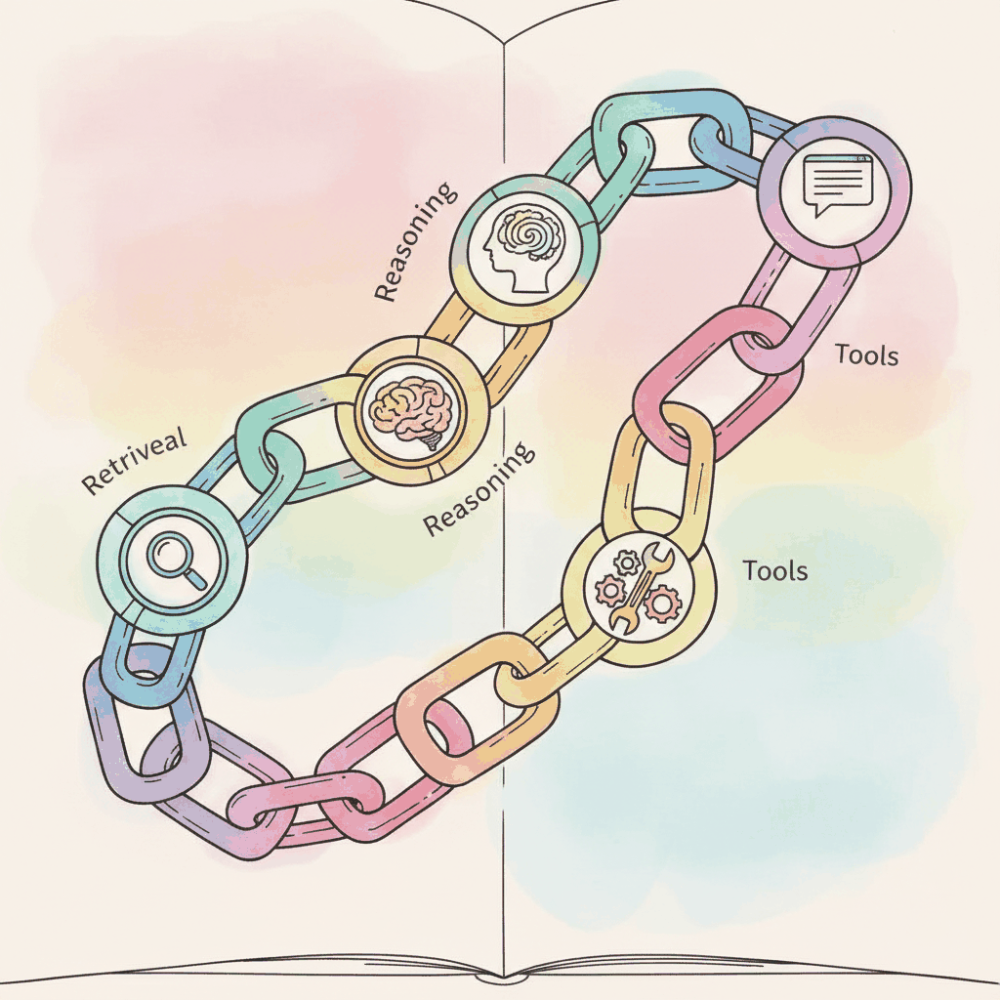

LangChain is the most widely adopted orchestration framework for LLM applications. It provides composable abstractions for prompt management, chain construction, memory handling, document loading, retrieval, output parsing, and agent tooling. The core philosophy is to make it straightforward to connect an LLM to external data and actions through a standardized interface.
This appendix is a hands-on reference. For the protocol-level treatment of tool calling and MCP, see Chapter 27: Tool Use, Function Calling & Protocols. Use this appendix when you need quick API recall or a code recipe; use the chapter when you need to understand why a pattern works.
The framework has evolved significantly since its initial release. LangChain v0.3+ introduced LangChain Expression Language (LCEL) for declarative chain composition, a cleaner separation between langchain-core, langchain-community, and provider-specific packages (such as langchain-openai and langchain-anthropic). These changes make it easier to build streaming, async-compatible pipelines while keeping dependencies minimal.
This appendix is aimed at application developers who want to build LLM-powered products quickly. LangChain excels at gluing together API calls, retrieval pipelines, and structured output parsing without writing boilerplate. If you need fine-grained control over model internals or training workflows, look to Appendix C (HuggingFace) instead.
The concepts here connect to Chapter 13 (LLM APIs), which covers the provider interfaces that LangChain wraps, and Chapter 14 (Prompt Engineering), which explains the prompt design principles behind LangChain's template system. For RAG pipelines built with LangChain retrievers, see Chapter 23 (RAG). For agent patterns, see Chapter 26; LangGraph (LangChain's graph-based extension) is covered briefly in Section D.5 and in its own documentation.
You should be comfortable with Chapter 13 (LLM APIs) so you understand how API calls, tokenization limits, and streaming work at the provider level. Chapter 14 (Prompt Engineering) provides the prompt design knowledge that makes LangChain's template and parser abstractions intuitive. Basic Python and familiarity with pip package installation are assumed.
Use LangChain when you need to rapidly prototype an LLM application that combines prompt templates, structured output parsing, document retrieval, or memory. It is a strong choice for RAG chatbots, document Q&A, data extraction pipelines, and any workflow that chains multiple LLM calls together. If your use case requires complex stateful agent workflows with branching logic, consider LangGraph (LangChain's graph-based extension). For a retrieval-first approach with deep indexing features, consult the LlamaIndex documentation.